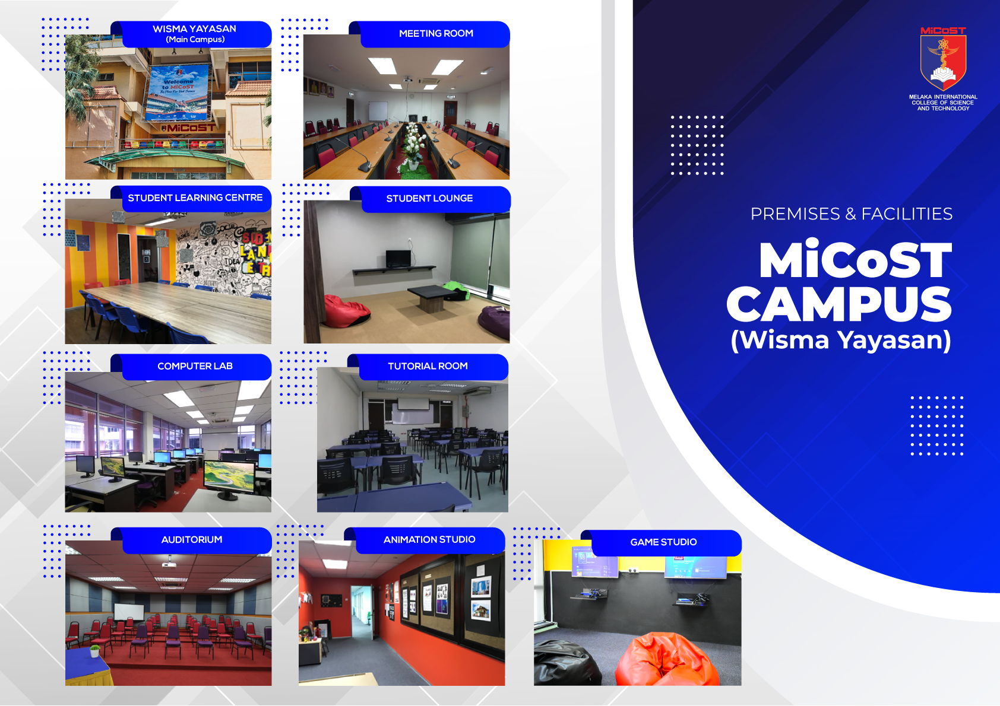
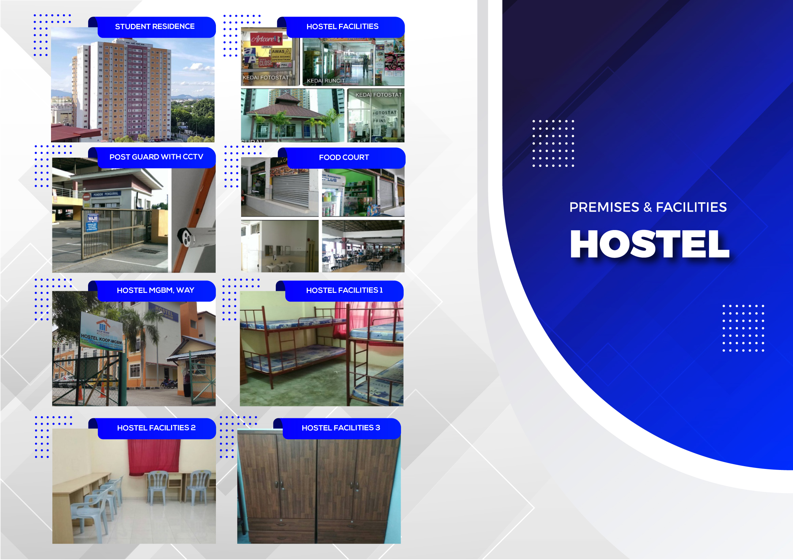
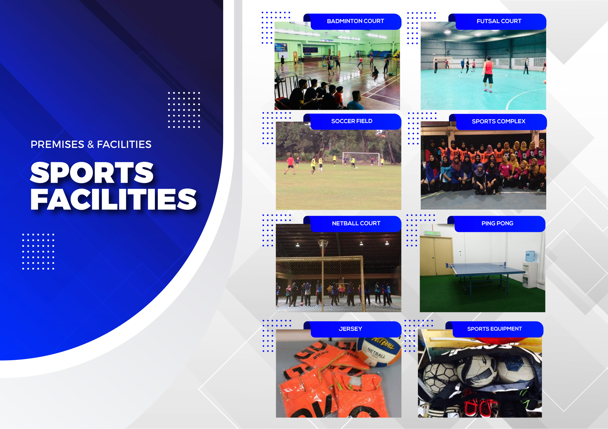

Premises & Facilities
MiCoST Campus
Kampus utama di Wisma Yayasan Melaka dilengkapi ruang pembelajaran, bilik tutorial, makmal komputer, auditorium, student lounge dan kemudahan sokongan pelajar.

Premises & Facilities
Kampus utama di Wisma Yayasan Melaka dilengkapi ruang pembelajaran, bilik tutorial, makmal komputer, auditorium, student lounge dan kemudahan sokongan pelajar.

Premises & Facilities
Asrama pelajar menyediakan penginapan, kemudahan keselamatan, ruang makan, kemudahan kedai asas dan persekitaran yang sesuai untuk kehidupan kampus.

Premises & Facilities
Kemudahan sukan seperti gelanggang badminton, futsal, padang bola, netball, ping pong dan peralatan sukan menyokong aktiviti pelajar.
Kemudahan Asas
MiCoST menyediakan prasarana sesuai sebagai institusi pengajian tinggi bertaraf Kerajaan Negeri, termasuk kompleks kediaman pelajar, kafe, kemudahan dobi, bilik MPP, auditorium, perpustakaan, makmal dan studio.